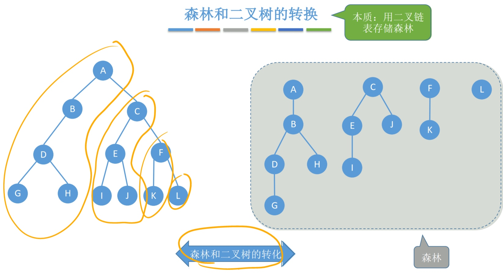

树的存储结构
一、存储结构
顺序存储和链式存储
方法：
双亲表示法（顺序存储）
孩子表示法（顺序+链式存储）
孩子兄弟表示法（链式存储）
二、双亲表示法（顺序存储）

双亲表示法：顺序存储结点数据，结点中保存父结点在数组中的下标
优点：找父节点方便。
缺点：找孩子不方便。
注：双亲表示法与二叉树的顺序存储不一样，双亲表示法也可表示二叉树
类型描述
结点包括数据和父亲下标，
树包括结点数组和结点个数
#define MAX_TREE_SIZE 100 //树中最多结点数
typedef struct{ //树的结点定义
ElemType data; //数据元素
int parent; //双亲位置域
}PTNode;
typedef struct{ //树的类型定义
PTNode nodes[MAX_TREE_SIZE]; //双亲表示
int n; //结点数
}PTree;
增加一个结点
新增元素，无需按逻辑次序存储，可以放到删除结点留下的存储空间里
删除一个结点
方案一：数据取出，双亲指针改为-1
方案二：用存储空间中最后一个存的结点把要删的结点覆盖
查找一个结点
找父结点方便、找孩子不方便。
空数据导致遍历慢。
二、孩子表示法（顺序+链式存储）

孩子表示法：顺序存储结点数据，结点中保存孩子链表头指针（链式存储）
优点：找孩子方便。
缺点：找父节点不方便。
类型描述
孩子结点包括孩子下标和下一个孩子指针，
数组包括数据和孩子结点，
树包括数组和数组元素（结点）个数及根的下标
#define MAX_TREE_SIZE 100 //树中最多结点数
struct CTNode{
int child; //孩子结点在数组中的位置
struct CTNode *next; //下一个孩子
};
typedef struct{
ElemType data;
struct CTNode* firstchild; //第一个孩子
}CTBox;
typedef struct{
CTBox nodes[MAX_TREE_SIZE];
int n, r; //结点数和根的位置
}CTree;
增加一个结点
新增元素，父结点后新增一个孩子结点，数组中加一个数组元素
删除一个结点
父结点后的链表中将此结点删除
数组中： ①若此结点后无链表，则直接删除 ②若此结点后有链表，再处理子树
查找一个结点
按图一行一行遍历
找孩子结点方便，找父结点不方便
三、孩子兄弟表示法（顺序+链式存储）

孩子兄弟表示法：用二叉链表存储树——两个指针：第一个孩子和右兄弟
用此方法存储的树，形态上和二叉树类似
类型描述
由二叉树的链式存储（二叉链表）改变而来
typedef struct CSNode{
Elemtype data; //数据域
struct CSTNode *firstchild, *nextsibling; //第一个孩子和右兄弟指针
}CSTNode, *CSTree;
应用：树和二叉树的转换

四、森林和二叉树的转换
本质：用二叉链表存储森林
将森林的根结点连起来，视为兄弟关系

